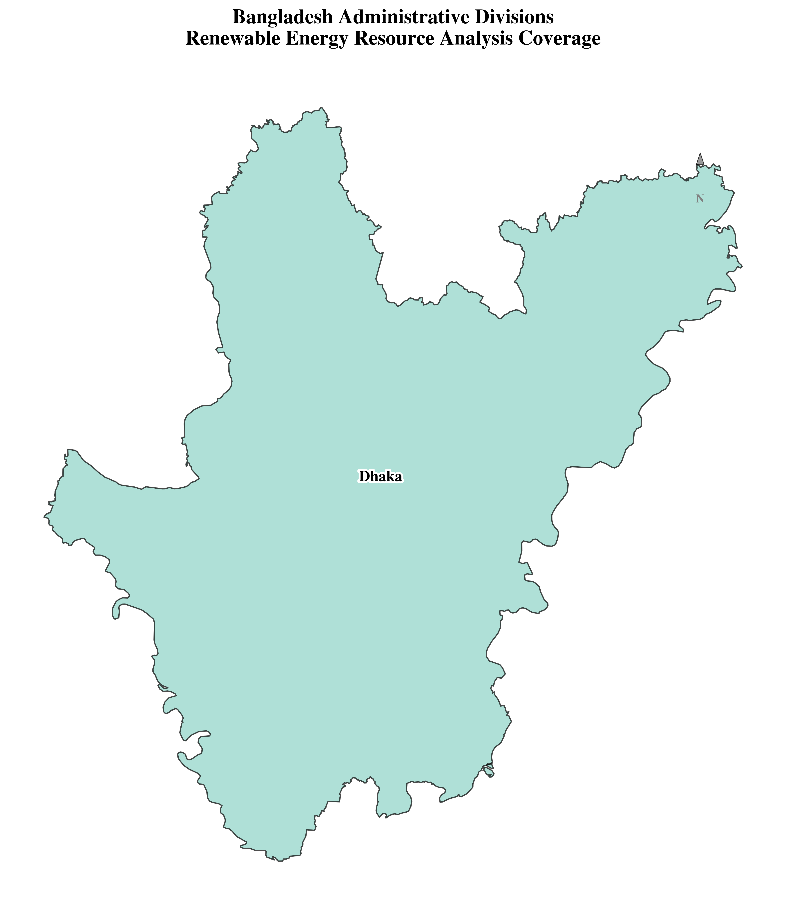
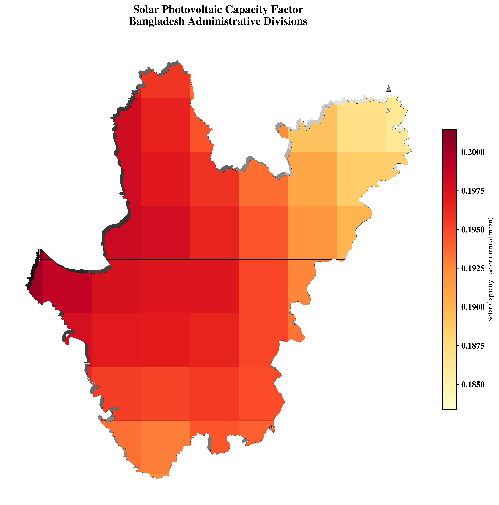
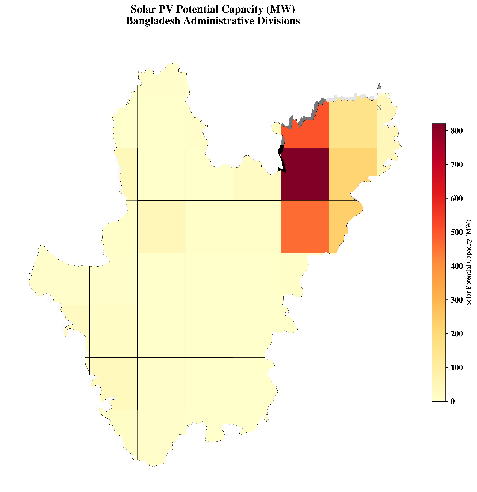
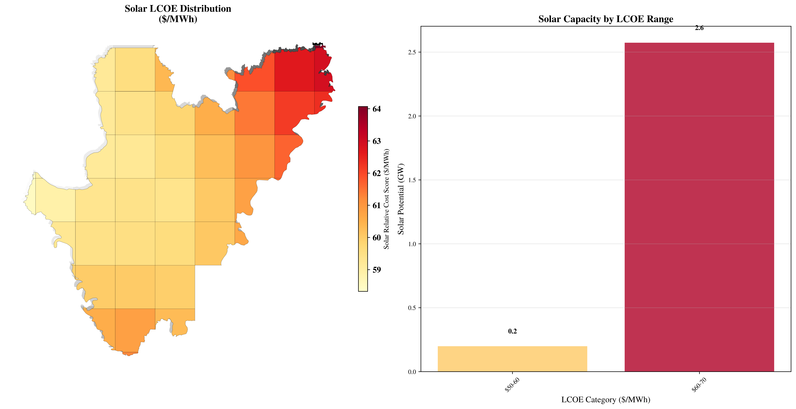
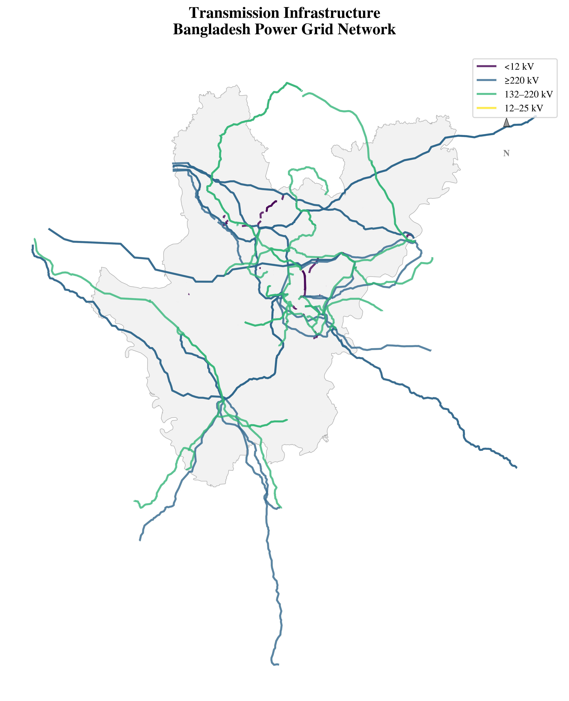

Bangladesh Renewable Energy Resource Analysis#
Comprehensive visualization of Bangladesh’s solar and wind energy potential across 8 administrative divisions#
Authors:#
Md Eliasinul Islam (Elias Islam)
Sustainable Energy Engineering, Simon Fraser University, BC, Canada
Study Coverage:#
Country: Bangladesh
Administrative Divisions: 8 (Barisal, Chittagong, Dhaka, Khulna, Mymensingh, Rajshahi, Rangpur, Sylhet)
Resource Types: Solar PV and Wind Energy
Data Sources: ERA5, GAEZ, Global Wind Atlas, OpenStreetMap, WorldPop
Section 1: Import Required Libraries#
[23]:
import warnings
from pathlib import Path
import geopandas as gpd
import matplotlib.pyplot as plt
import matplotlib.patheffects as pe
import pandas as pd
import rasterio as rio
import rioxarray as rxr
import numpy as np
import seaborn as sns
from matplotlib.colors import ListedColormap, BoundaryNorm, to_rgba
from matplotlib.patches import Patch
import RES.visuals as vis
from RES import utility as utils
from RES.hdf5_handler import DataHandler
import RES.utility as utlis
# Set plotting style
plt.style.use('../RES/visual_styles/elsevier.mplstyle')
# Suppress specific warnings
warnings.filterwarnings("ignore", category=UserWarning)
warnings.filterwarnings("ignore", category=FutureWarning)
print("✓ All required libraries imported successfully!")
✓ All required libraries imported successfully!
Section 2: Load Configuration and Data#
[24]:
# Load configuration file
cfg = utils.load_config('../config/config_BGD.yaml')
sub_national_unit_tag = cfg.get('GADM').get('datafield_mapping').get('NAME_1')
country_name = cfg.get('country', 'Bangladesh')
country_kwd = country_name.replace(' ', '')
# Define all 8 administrative divisions of Bangladesh
regions = ['BD-01', 'BD-02', 'BD-03', 'BD-04', 'BD-05', 'BD-06', 'BD-07', 'BD-08']
region_names = {
'BD-01': 'Barisal',
'BD-02': 'Chittagong',
'BD-03': 'Dhaka',
'BD-04': 'Khulna',
'BD-05': 'Mymensingh',
'BD-06': 'Rajshahi',
'BD-07': 'Rangpur',
'BD-08': 'Sylhet'
}
print(f"✓ Configuration loaded for {country_name}")
print(f"✓ Administrative divisions: {list(region_names.values())}")
✓ Configuration loaded for Bangladesh
✓ Administrative divisions: ['Barisal', 'Chittagong', 'Dhaka', 'Khulna', 'Mymensingh', 'Rajshahi', 'Rangpur', 'Sylhet']
[25]:
# Load processed data stores for all regions
RUN_ID = 'baseline' # All the regions should have RUN_ID results available
BGD_store = {}
utils.print_update(level=1, message=f"Loading data stores for Bangladesh regions with RUN_ID: {RUN_ID}")
for region in regions:
country_dict = {}
try:
store = Path(f"../data/store/resources_{country_kwd}_{region}_{RUN_ID}.h5")
if store.exists():
res_data = DataHandler(store, show_structure=False)
country_dict['cells'] = res_data.from_store('cells')
country_dict['boundary'] = res_data.from_store('boundary')
try:
country_dict['lines'] = res_data.from_store('lines')
except:
print(f" No transmission line data for {region}")
country_dict['lines'] = None
BGD_store[region] = country_dict
utils.print_update(level=2, message=f"✓ Loaded data for region: {region} ({region_names[region]})")
else:
print(f" ⚠️ Store not found for region {region} ({region_names[region]}): {store}")
except Exception as e:
print(f" ❌ Error with region {region} ({region_names[region]}): {e}")
continue
print(f"\n✓ Successfully loaded data for {len(BGD_store)} out of {len(regions)} regions")
available_regions = list(BGD_store.keys())
print(f"Available regions: {[f'{r} ({region_names[r]})' for r in available_regions]}")
└> Loading data stores for Bangladesh regions with RUN_ID: baseline
└> RES.hdf5_handler| ❌ Error: Key 'cells' not found in ../data/store/resources_Bangladesh_BD-01_baseline.h5
└> RES.hdf5_handler| ❌ Error: Key 'boundary' not found in ../data/store/resources_Bangladesh_BD-01_baseline.h5
└> RES.hdf5_handler| ❌ Error: Key 'lines' not found in ../data/store/resources_Bangladesh_BD-01_baseline.h5
└> ✓ Loaded data for region: BD-01 (Barisal)
⚠️ Store not found for region BD-02 (Chittagong): ../data/store/resources_Bangladesh_BD-02_baseline.h5
└> ✓ Loaded data for region: BD-03 (Dhaka)
⚠️ Store not found for region BD-04 (Khulna): ../data/store/resources_Bangladesh_BD-04_baseline.h5
⚠️ Store not found for region BD-05 (Mymensingh): ../data/store/resources_Bangladesh_BD-05_baseline.h5
⚠️ Store not found for region BD-06 (Rajshahi): ../data/store/resources_Bangladesh_BD-06_baseline.h5
⚠️ Store not found for region BD-07 (Rangpur): ../data/store/resources_Bangladesh_BD-07_baseline.h5
⚠️ Store not found for region BD-08 (Sylhet): ../data/store/resources_Bangladesh_BD-08_baseline.h5
✓ Successfully loaded data for 2 out of 8 regions
Available regions: ['BD-01 (Barisal)', 'BD-03 (Dhaka)']
Load Validation Data (if available)#
[26]:
# Load existing renewable energy projects data for Bangladesh (if available)
existing_VREs_data_path = Path("../data/validation_data/existing_VREs_Bangladesh.csv")
if existing_VREs_data_path.exists():
existing_VREs = pd.read_csv(existing_VREs_data_path)
existing_VREs_gdf = gpd.GeoDataFrame(
existing_VREs,
geometry=gpd.points_from_xy(existing_VREs.Longitude, existing_VREs.Latitude),
crs="EPSG:4326"
)
utils.print_update(level=1, message=f"✓ Loaded validation data for existing VREs from {existing_VREs_data_path}")
print(f" Found {len(existing_VREs_gdf)} existing renewable energy projects")
else:
existing_VREs_gdf = None
utils.print_warning(f"⚠️ Validation data for existing VREs not found at {existing_VREs_data_path}")
print(" You can create this file with columns: Project_Name, Technology, Capacity_MW, Longitude, Latitude")
⚠️ ⚠️ Validation data for existing VREs not found at ../data/validation_data/existing_VREs_Bangladesh.csv
You can create this file with columns: Project_Name, Technology, Capacity_MW, Longitude, Latitude
Section 3: Create Country Overview Map#
[27]:
BGD_store = {'BD-03': BGD_store['BD-03']}
[28]:
# Create combined boundary for Bangladesh
if BGD_store:
# Combine all region boundaries into a single GeoDataFrame
boundary_gdfs = [BGD_store[region]['boundary'] for region in BGD_store]
BGD_boundary = gpd.GeoDataFrame(pd.concat(boundary_gdfs, ignore_index=True), crs=boundary_gdfs[0].crs)
BGD_boundary_dissolved = BGD_boundary.dissolve(by="Country")[["geometry"]].reset_index()
# Create a map showing all administrative divisions
fig, ax = plt.subplots(figsize=(12, 10))
# Plot individual boundaries with different colors
colors = plt.cm.Set3(np.linspace(0, 1, len(BGD_store)))
for i, (region, data) in enumerate(BGD_store.items()):
boundary = data['boundary']
boundary.plot(ax=ax, color=colors[i], alpha=0.7, edgecolor='black', linewidth=1)
# Add division labels
centroid = boundary.geometry.centroid.iloc[0]
ax.annotate(
f"{region_names[region]}",
(centroid.x, centroid.y),
ha="center", va="center",
fontsize=12, fontweight="bold", color="black",
path_effects=[pe.withStroke(linewidth=3, foreground="white")]
)
# Add existing VREs if available
if existing_VREs_gdf is not None:
existing_VREs_gdf.plot(ax=ax, color='red', markersize=100, alpha=0.8,
label='Existing Renewable Energy Projects')
ax.legend(loc='upper right')
ax.set_title("Bangladesh Administrative Divisions\nRenewable Energy Resource Analysis Coverage",
fontsize=16, fontweight='bold', pad=20)
ax.set_axis_off()
# Add compass
vis.add_compass_arrow_custom(ax, text_offset=0.04)
plt.tight_layout()
# Save the map
save_path = Path(f'../vis/{country_kwd}/Bangladesh_Administrative_Divisions.png')
save_path.parent.mkdir(parents=True, exist_ok=True)
plt.savefig(save_path, dpi=300, bbox_inches='tight')
plt.show()
print(f"✓ Country overview map saved to: {save_path}")
else:
print("❌ No boundary data available to create country overview map")

✓ Country overview map saved to: ../vis/Bangladesh/Bangladesh_Administrative_Divisions.png
Section 4: Display Land Use Constraints (GAEZ Analysis)#
[29]:
# Load GAEZ land cover legends and class mappings
GAEZ_legends = pd.read_csv("../data/faocmb_2010_legend.csv") if Path("../data/faocmb_2010_legend.csv").exists() else None
class_inclusion_layers = cfg.get('GAEZ', {}).get('raster_types', [])
if class_inclusion_layers:
# Find land cover configuration
land_cover_config = None
for raster_type in class_inclusion_layers:
if raster_type.get('name') == 'land_cover':
land_cover_config = raster_type
break
if land_cover_config and BGD_boundary_dissolved is not None:
print("✓ Found GAEZ land cover configuration")
print(f" Solar suitable classes: {land_cover_config.get('class_inclusion', {}).get('solar', [])}")
print(f" Wind suitable classes: {land_cover_config.get('class_inclusion', {}).get('wind', [])}")
# Define raster path for GAEZ land cover
GAEZ_raster_path = Path('../Rasters_in_use/faocmb_2010.tif')
if GAEZ_raster_path.exists():
print(f"✓ Found GAEZ raster at: {GAEZ_raster_path}")
# Reproject boundary to UTM for clipping
BGD_boundary_utm = BGD_boundary_dissolved.to_crs(epsg=32646) # UTM Zone 46N for Bangladesh
# Get bounds for clipping
minx, miny, maxx, maxy = BGD_boundary_utm.total_bounds
bounding_box_dict = {
"minx": float(minx),
"miny": float(miny),
"maxx": float(maxx),
"maxy": float(maxy)
}
try:
# Load and clip raster to Bangladesh boundary
GAEZ_raster_data = (
rxr.open_rasterio(GAEZ_raster_path)
.rio.reproject("EPSG:32646") # Reproject to UTM
.rio.clip_box(**bounding_box_dict)
)
print("✓ Successfully loaded and clipped GAEZ land cover data")
# Extract unique land cover classes
codes = np.unique(GAEZ_raster_data.values[~np.isnan(GAEZ_raster_data.values)])
codes = codes.astype(int)
print(f" Found {len(codes)} unique land cover classes in Bangladesh")
except Exception as e:
print(f"❌ Error loading GAEZ raster: {e}")
GAEZ_raster_data = None
else:
print(f"⚠️ GAEZ raster not found at: {GAEZ_raster_path}")
GAEZ_raster_data = None
else:
print("⚠️ No land cover configuration found in GAEZ settings")
GAEZ_raster_data = None
else:
print("⚠️ No GAEZ raster configuration found")
GAEZ_raster_data = None
✓ Found GAEZ land cover configuration
Solar suitable classes: [2, 3, 5, 6, 8, 9]
Wind suitable classes: [2, 3, 5, 6, 8, 9]
⚠️ GAEZ raster not found at: ../Rasters_in_use/faocmb_2010.tif
Section 5: Visualize Solar Resource Distribution#
[30]:
# Combine all cell data for comprehensive solar analysis
if BGD_store:
all_cells = [BGD_store[region]['cells'] for region in BGD_store]
BGD_cells = gpd.GeoDataFrame(pd.concat(all_cells, ignore_index=True), crs=all_cells[0].crs)
print(f"✓ Combined data from {len(BGD_store)} regions")
print(f" Total grid cells: {len(BGD_cells)}")
# Check available solar data columns
solar_columns = [col for col in BGD_cells.columns if 'solar' in col.lower()]
print(f" Available solar data columns: {solar_columns}")
# Create solar resource visualizations
if 'solar_CF_mean' in BGD_cells.columns or any('CF' in col and 'solar' in col for col in BGD_cells.columns):
# Find the correct CF column
cf_column = None
for col in BGD_cells.columns:
if 'solar_CF_mean' == col:
cf_column = col
break
elif 'CF' in col and 'solar' in col:
cf_column = col
break
if cf_column:
fig, ax = plt.subplots(figsize=(12, 10))
# Plot solar capacity factor
vis.get_data_in_map_plot(
BGD_cells,
resource_type='solar',
datafield='CF',
ax=ax,
show=False
)
# Add existing VREs if available
if existing_VREs_gdf is not None:
solar_projects = existing_VREs_gdf[
existing_VREs_gdf['Technology'].str.lower().str.contains('solar', na=False)
]
if len(solar_projects) > 0:
solar_projects.plot(
ax=ax, color='None', edgecolor='orangered',
markersize=100, linewidth=2, marker='s',
alpha=1, zorder=5, label='Existing Solar Projects'
)
ax.legend(loc='upper right', fontsize=10, frameon=True)
ax.set_title("Solar Photovoltaic Capacity Factor\nBangladesh Administrative Divisions",
fontsize=16, fontweight='bold', pad=20)
# Add compass
vis.add_compass_arrow_custom(ax, text_offset=0.04)
plt.tight_layout()
# Save the plot
save_path = Path(f'../vis/{country_kwd}/Bangladesh_Solar_CF.png')
save_path.parent.mkdir(parents=True, exist_ok=True)
plt.savefig(save_path, dpi=300, bbox_inches='tight')
plt.show()
print(f"✓ Solar CF map saved to: {save_path}")
else:
print("⚠️ No solar capacity factor data found")
else:
print("⚠️ No solar resource data available")
else:
print("❌ No cell data available for solar resource visualization")
✓ Combined data from 1 regions
Total grid cells: 51
Available solar data columns: ['potential_capacity_solar', 'capex_solar', 'fom_solar', 'vom_solar', 'grid_connection_cost_per_km_solar', 'tx_line_rebuild_cost_solar', 'Operational_life_solar', 'solar_CF_mean', 'lcoe_solar', 'lcoe_actualCap_solar']
└> Please cross check with Solar CF map with GLobal Solar Atlas Data from : https://globalsolaratlas.info/download/country_name

✓ Solar CF map saved to: ../vis/Bangladesh/Bangladesh_Solar_CF.png
Section 6: Visualize Solar Capacity Potential#
[31]:
# Visualize solar capacity potential
if BGD_store and 'potential_capacity_solar' in BGD_cells.columns:
fig, ax = plt.subplots(figsize=(12, 10))
# Plot solar capacity potential
vis.get_data_in_map_plot(
BGD_cells,
resource_type='solar',
datafield='capacity',
ax=ax,
show=False
)
# Add existing VREs if available
if existing_VREs_gdf is not None:
solar_projects = existing_VREs_gdf[
existing_VREs_gdf['Technology'].str.lower().str.contains('solar', na=False)
]
if len(solar_projects) > 0:
solar_projects.plot(
ax=ax, color='None', edgecolor='orangered',
markersize=100, linewidth=2, marker='s',
alpha=1, zorder=5, label='Existing Solar Projects'
)
ax.legend(loc='upper right', fontsize=10, frameon=True)
ax.set_title("Solar PV Potential Capacity (MW)\nBangladesh Administrative Divisions",
fontsize=16, fontweight='bold', pad=20)
# Add compass
vis.add_compass_arrow_custom(ax, text_offset=0.04)
plt.tight_layout()
# Save the plot
save_path = Path(f'../vis/{country_kwd}/Bangladesh_Solar_Capacity.png')
save_path.parent.mkdir(parents=True, exist_ok=True)
plt.savefig(save_path, dpi=300, bbox_inches='tight')
plt.show()
# Calculate and display summary statistics
total_solar_capacity = BGD_cells['potential_capacity_solar'].sum()
max_solar_capacity = BGD_cells['potential_capacity_solar'].max()
mean_solar_capacity = BGD_cells['potential_capacity_solar'].mean()
print(f"✓ Solar capacity map saved to: {save_path}")
print(f"\n📊 Solar Capacity Summary:")
print(f" Total potential capacity: {total_solar_capacity/1000:.1f} GW")
print(f" Maximum cell capacity: {max_solar_capacity:.1f} MW")
print(f" Average cell capacity: {mean_solar_capacity:.1f} MW")
else:
print("⚠️ No solar capacity data available for visualization")
└> Please cross check with Solar CF map with GLobal Solar Atlas Data from : https://globalsolaratlas.info/download/country_name

✓ Solar capacity map saved to: ../vis/Bangladesh/Bangladesh_Solar_Capacity.png
📊 Solar Capacity Summary:
Total potential capacity: 2.8 GW
Maximum cell capacity: 820.3 MW
Average cell capacity: 54.5 MW
Section 7: Generate LCOE Analysis#
[32]:
# LCOE (Levelized Cost of Energy) Analysis for Solar
if BGD_store and 'lcoe_solar' in BGD_cells.columns:
# Define LCOE bins for categorization
solar_bins = [0, 50, 60, 70, 80, 100, float('inf')]
solar_labels = ['<$50', '$50-60', '$60-70', '$70-80', '$80-100', '>$100']
# Categorize LCOE into bins
BGD_cells['solar_lcoe_category'] = pd.cut(
BGD_cells['lcoe_solar'],
bins=solar_bins,
labels=solar_labels,
include_lowest=True
)
# Create LCOE visualization
fig, (ax1, ax2) = plt.subplots(1, 2, figsize=(16, 8))
# Map plot
vis.get_data_in_map_plot(
BGD_cells,
resource_type='solar',
datafield='score', # This typically corresponds to LCOE
ax=ax1,
show=False
)
# Add existing VREs if available
if existing_VREs_gdf is not None:
solar_projects = existing_VREs_gdf[
existing_VREs_gdf['Technology'].str.lower().str.contains('solar', na=False)
]
if len(solar_projects) > 0:
solar_projects.plot(
ax=ax1, color='None', edgecolor='orangered',
markersize=80, linewidth=2, marker='s',
alpha=1, zorder=5, label='Existing Solar'
)
ax1.legend(loc='upper right', fontsize=10, frameon=True)
ax1.set_title("Solar LCOE Distribution\n($/MWh)", fontsize=14, fontweight='bold')
# Bar chart of capacity by LCOE category
lcoe_capacity = (
BGD_cells.groupby('solar_lcoe_category')['potential_capacity_solar']
.sum().div(1e3) # Convert to GW
.reindex(solar_labels, fill_value=0)
)
# Remove empty categories
lcoe_capacity = lcoe_capacity[lcoe_capacity > 0]
# Color mapping for consistency
colors = plt.cm.YlOrRd(np.linspace(0.3, 0.9, len(lcoe_capacity)))
ax2.bar(range(len(lcoe_capacity)), lcoe_capacity.values, color=colors, alpha=0.8)
ax2.set_xticks(range(len(lcoe_capacity)))
ax2.set_xticklabels(lcoe_capacity.index, rotation=45)
ax2.set_ylabel('Solar Potential (GW)', fontsize=12)
ax2.set_xlabel('LCOE Category ($/MWh)', fontsize=12)
ax2.set_title('Solar Capacity by LCOE Range', fontsize=14, fontweight='bold')
ax2.grid(axis='y', alpha=0.3)
# Add value labels on bars
for i, v in enumerate(lcoe_capacity.values):
ax2.text(i, v + 0.1, f'{v:.1f}', ha='center', fontweight='bold')
plt.tight_layout()
# Save the plot
save_path = Path(f'../vis/{country_kwd}/Bangladesh_Solar_LCOE_Analysis.png')
save_path.parent.mkdir(parents=True, exist_ok=True)
plt.savefig(save_path, dpi=300, bbox_inches='tight')
plt.show()
# Calculate LCOE statistics
mean_lcoe = BGD_cells['lcoe_solar'].mean()
min_lcoe = BGD_cells['lcoe_solar'].min()
max_lcoe = BGD_cells['lcoe_solar'].max()
print(f"✓ LCOE analysis saved to: {save_path}")
print(f"\n💰 Solar LCOE Summary:")
print(f" Average LCOE: ${mean_lcoe:.1f}/MWh")
print(f" Minimum LCOE: ${min_lcoe:.1f}/MWh")
print(f" Maximum LCOE: ${max_lcoe:.1f}/MWh")
print(f" Most economic range: {lcoe_capacity.index[0]} with {lcoe_capacity.iloc[0]:.1f} GW potential")
else:
print("⚠️ No LCOE data available for analysis")
└> Please cross check with Solar CF map with GLobal Solar Atlas Data from : https://globalsolaratlas.info/download/country_name

✓ LCOE analysis saved to: ../vis/Bangladesh/Bangladesh_Solar_LCOE_Analysis.png
💰 Solar LCOE Summary:
Average LCOE: $60.4/MWh
Minimum LCOE: $58.3/MWh
Maximum LCOE: $64.1/MWh
Most economic range: $50-60 with 0.2 GW potential
Section 8: Show Transmission Infrastructure#
[33]:
# Visualize transmission infrastructure from OpenStreetMap data
if BGD_store:
# Combine all transmission line data
all_lines = []
for region in BGD_store:
if BGD_store[region]['lines'] is not None:
all_lines.append(BGD_store[region]['lines'])
if all_lines:
BGD_lines = gpd.GeoDataFrame(pd.concat(all_lines, ignore_index=True), crs=all_lines[0].crs)
# Process voltage data if available
if 'voltage' in BGD_lines.columns:
# Convert to numeric and create voltage classes
BGD_lines['voltage_kv'] = pd.to_numeric(BGD_lines['voltage'], errors='coerce') / 1000
# Define voltage bins
bins = [0, 12, 25, 132, 220, float("inf")]
labels = ["<12 kV", "12–25 kV", "25–132 kV", "132–220 kV", "≥220 kV"]
BGD_lines['voltage_class'] = pd.cut(BGD_lines['voltage_kv'], bins=bins, labels=labels, right=False)
# Create transmission infrastructure map
fig, ax = plt.subplots(figsize=(12, 10))
# Plot boundaries first
if BGD_boundary_dissolved is not None:
BGD_boundary_dissolved.plot(
ax=ax, edgecolor='black', facecolor='lightgray',
linewidth=0.5, alpha=0.3
)
# Plot transmission lines by voltage class
unique_classes = BGD_lines['voltage_class'].dropna().unique()
colors = plt.cm.viridis(np.linspace(0, 1, len(unique_classes)))
for i, voltage_class in enumerate(unique_classes):
lines_subset = BGD_lines[BGD_lines['voltage_class'] == voltage_class]
lines_subset.plot(
ax=ax, color=colors[i], linewidth=2,
alpha=0.8, label=str(voltage_class)
)
# Add existing VREs if available
if existing_VREs_gdf is not None:
existing_VREs_gdf.plot(
ax=ax, color='red', markersize=100, alpha=0.8,
marker='*', label='Existing RE Projects', zorder=5
)
ax.set_title("Transmission Infrastructure\nBangladesh Power Grid Network",
fontsize=16, fontweight='bold', pad=20)
ax.legend(loc='upper right', fontsize=10, frameon=True)
ax.set_axis_off()
# Add compass
vis.add_compass_arrow_custom(ax, text_offset=0.04)
plt.tight_layout()
# Save the plot
save_path = Path(f'../vis/{country_kwd}/Bangladesh_Transmission_Grid.png')
save_path.parent.mkdir(parents=True, exist_ok=True)
plt.savefig(save_path, dpi=300, bbox_inches='tight')
plt.show()
print(f"✓ Transmission grid map saved to: {save_path}")
print(f" Total transmission lines: {len(BGD_lines)}")
print(f" Voltage classes found: {list(unique_classes)}")
else:
print("⚠️ No voltage information available in transmission line data")
else:
print("⚠️ No transmission line data available")
else:
print("❌ No data available for transmission infrastructure visualization")

✓ Transmission grid map saved to: ../vis/Bangladesh/Bangladesh_Transmission_Grid.png
Total transmission lines: 518
Voltage classes found: ['<12 kV', '≥220 kV', '132–220 kV', '12–25 kV']
Section 9: Generate Resource Potential Summary by Divisions#
[34]:
# Generate comprehensive summary by administrative divisions
if BGD_store and len(BGD_cells) > 0:
# Create division-level summary
division_summary = []
for region in BGD_store:
region_cells = BGD_store[region]['cells']
summary_row = {
'Division_Code': region,
'Division_Name': region_names[region],
'Grid_Cells': len(region_cells),
'Total_Solar_Capacity_MW': region_cells.get('potential_capacity_solar', pd.Series([0])).sum(),
'Avg_Solar_CF': region_cells.get('solar_CF_mean', pd.Series([0])).mean(),
'Min_Solar_LCOE': region_cells.get('lcoe_solar', pd.Series([float('inf')])).min(),
'Avg_Solar_LCOE': region_cells.get('lcoe_solar', pd.Series([0])).mean(),
'Land_Area_km2': cfg['region_mapping'][region]['land_area_km2']
}
# Handle wind data if available
if 'potential_capacity_wind' in region_cells.columns:
summary_row['Total_Wind_Capacity_MW'] = region_cells['potential_capacity_wind'].sum()
if 'wind_CF_mean' in region_cells.columns:
summary_row['Avg_Wind_CF'] = region_cells['wind_CF_mean'].mean()
if 'lcoe_wind' in region_cells.columns:
summary_row['Min_Wind_LCOE'] = region_cells['lcoe_wind'].min()
summary_row['Avg_Wind_LCOE'] = region_cells['lcoe_wind'].mean()
division_summary.append(summary_row)
# Convert to DataFrame
summary_df = pd.DataFrame(division_summary)
# Clean up infinite values
summary_df = summary_df.replace([float('inf'), -float('inf')], np.nan)
# Display summary table
print("🏛️ BANGLADESH RENEWABLE ENERGY POTENTIAL BY ADMINISTRATIVE DIVISIONS")
print("=" * 80)
print(summary_df.to_string(index=False, float_format='%.1f'))
# Create visualization of division-level data
if len(summary_df) > 1: # Only create plots if we have multiple divisions
fig, ((ax1, ax2), (ax3, ax4)) = plt.subplots(2, 2, figsize=(16, 12))
# Solar capacity by division
ax1.bar(summary_df['Division_Name'], summary_df['Total_Solar_Capacity_MW']/1000,
color='orange', alpha=0.7)
ax1.set_title('Solar Potential by Division (GW)', fontweight='bold')
ax1.tick_params(axis='x', rotation=45)
ax1.set_ylabel('Capacity (GW)')
# Solar capacity factor by division
ax2.bar(summary_df['Division_Name'], summary_df['Avg_Solar_CF'],
color='red', alpha=0.7)
ax2.set_title('Average Solar Capacity Factor', fontweight='bold')
ax2.tick_params(axis='x', rotation=45)
ax2.set_ylabel('Capacity Factor')
ax2.set_ylim(0, 1)
# Solar LCOE by division
ax3.bar(summary_df['Division_Name'], summary_df['Avg_Solar_LCOE'],
color='gold', alpha=0.7)
ax3.set_title('Average Solar LCOE ($/MWh)', fontweight='bold')
ax3.tick_params(axis='x', rotation=45)
ax3.set_ylabel('LCOE ($/MWh)')
# Land area vs solar potential scatter
ax4.scatter(summary_df['Land_Area_km2'], summary_df['Total_Solar_Capacity_MW']/1000,
s=100, alpha=0.7, color='green')
ax4.set_xlabel('Land Area (km²)')
ax4.set_ylabel('Solar Potential (GW)')
ax4.set_title('Land Area vs Solar Potential', fontweight='bold')
# Add division labels to scatter plot
for i, txt in enumerate(summary_df['Division_Name']):
ax4.annotate(txt, (summary_df['Land_Area_km2'].iloc[i],
summary_df['Total_Solar_Capacity_MW'].iloc[i]/1000),
fontsize=8, alpha=0.7)
plt.tight_layout()
# Save the summary plot
save_path = Path(f'../vis/{country_kwd}/Bangladesh_Division_Summary.png')
save_path.parent.mkdir(parents=True, exist_ok=True)
plt.savefig(save_path, dpi=300, bbox_inches='tight')
plt.show()
print(f"\\n✓ Division summary plots saved to: {save_path}")
# Save summary table as CSV
csv_path = Path(f'../results/{country_kwd}/Bangladesh_Division_Summary.csv')
csv_path.parent.mkdir(parents=True, exist_ok=True)
summary_df.to_csv(csv_path, index=False)
print(f"✓ Summary table saved to: {csv_path}")
# Calculate national totals
total_solar_gw = summary_df['Total_Solar_Capacity_MW'].sum() / 1000
avg_national_cf = summary_df['Avg_Solar_CF'].mean()
avg_national_lcoe = summary_df['Avg_Solar_LCOE'].mean()
print(f"\\n🇧🇩 NATIONAL SUMMARY:")
print(f" Total Solar Potential: {total_solar_gw:.1f} GW")
print(f" National Average CF: {avg_national_cf:.3f}")
print(f" National Average LCOE: ${avg_national_lcoe:.1f}/MWh")
else:
print("❌ No data available to generate division summary")
🏛️ BANGLADESH RENEWABLE ENERGY POTENTIAL BY ADMINISTRATIVE DIVISIONS
================================================================================
Division_Code Division_Name Grid_Cells Total_Solar_Capacity_MW Avg_Solar_CF Min_Solar_LCOE Avg_Solar_LCOE Land_Area_km2 Total_Wind_Capacity_MW
BD-03 Dhaka 51 2778.7 0.2 58.3 60.4 20,594 4783.5
✓ Summary table saved to: ../results/Bangladesh/Bangladesh_Division_Summary.csv
\n🇧🇩 NATIONAL SUMMARY:
Total Solar Potential: 2.8 GW
National Average CF: 0.194
National Average LCOE: $60.4/MWh
Section 10: Export Final Visualizations and Create Report#
[35]:
# Create a comprehensive final summary and export high-resolution figures
print("📊 FINAL BANGLADESH RENEWABLE ENERGY RESOURCE ANALYSIS SUMMARY")
print("=" * 70)
# Check what data we have available
if BGD_store:
available_divisions = list(BGD_store.keys())
total_divisions = len(regions)
print(f"✅ DATA AVAILABILITY:")
print(f" • Processed divisions: {len(available_divisions)}/{total_divisions}")
print(f" • Available divisions: {[f'{r} ({region_names[r]})' for r in available_divisions]}")
if len(available_divisions) < total_divisions:
missing_divisions = [r for r in regions if r not in available_divisions]
print(f" • Missing divisions: {[f'{r} ({region_names[r]})' for r in missing_divisions]}")
print(f" • Note: Run RESource analysis for missing divisions to get complete coverage")
# Generate final combined visualization
if len(BGD_cells) > 0:
# Create a comprehensive dashboard
fig = plt.figure(figsize=(20, 16))
gs = fig.add_gridspec(3, 3, hspace=0.3, wspace=0.3)
# Title
fig.suptitle('Bangladesh Renewable Energy Resource Analysis Dashboard',
fontsize=24, fontweight='bold', y=0.95)
# Map 1: Administrative boundaries
ax1 = fig.add_subplot(gs[0, 0])
if BGD_boundary_dissolved is not None:
colors = plt.cm.Set3(np.linspace(0, 1, len(BGD_store)))
for i, (region, data) in enumerate(BGD_store.items()):
data['boundary'].plot(ax=ax1, color=colors[i], alpha=0.7, edgecolor='black')
centroid = data['boundary'].geometry.centroid.iloc[0]
ax1.annotate(region_names[region], (centroid.x, centroid.y),
ha="center", va="center", fontsize=8, fontweight="bold")
ax1.set_title('Administrative Divisions', fontweight='bold')
ax1.set_axis_off()
# Map 2: Solar capacity factor
ax2 = fig.add_subplot(gs[0, 1])
if 'solar_CF_mean' in BGD_cells.columns or any('CF' in col and 'solar' in col for col in BGD_cells.columns):
vis.get_data_in_map_plot(BGD_cells, resource_type='solar', datafield='CF', ax=ax2, show=False)
ax2.set_title('Solar Capacity Factor', fontweight='bold')
# Map 3: Solar capacity potential
ax3 = fig.add_subplot(gs[0, 2])
if 'potential_capacity_solar' in BGD_cells.columns:
vis.get_data_in_map_plot(BGD_cells, resource_type='solar', datafield='capacity', ax=ax3, show=False)
ax3.set_title('Solar Capacity Potential (MW)', fontweight='bold')
# Chart 1: Division comparison
ax4 = fig.add_subplot(gs[1, :])
if len(summary_df) > 0:
x = np.arange(len(summary_df))
width = 0.35
ax4_twin = ax4.twinx()
bars1 = ax4.bar(x - width/2, summary_df['Total_Solar_Capacity_MW']/1000,
width, label='Solar Capacity (GW)', color='orange', alpha=0.7)
bars2 = ax4_twin.bar(x + width/2, summary_df['Avg_Solar_CF'],
width, label='Avg CF', color='red', alpha=0.7)
ax4.set_xlabel('Administrative Divisions')
ax4.set_ylabel('Solar Capacity (GW)', color='orange')
ax4_twin.set_ylabel('Capacity Factor', color='red')
ax4.set_title('Solar Resource Potential by Division', fontweight='bold')
ax4.set_xticks(x)
ax4.set_xticklabels(summary_df['Division_Name'], rotation=45)
# Add legends
lines1, labels1 = ax4.get_legend_handles_labels()
lines2, labels2 = ax4_twin.get_legend_handles_labels()
ax4.legend(lines1 + lines2, labels1 + labels2, loc='upper right')
# Chart 2: LCOE distribution
ax5 = fig.add_subplot(gs[2, 0])
if 'lcoe_solar' in BGD_cells.columns:
BGD_cells['lcoe_solar'].hist(bins=20, ax=ax5, color='gold', alpha=0.7)
ax5.axvline(BGD_cells['lcoe_solar'].mean(), color='red', linestyle='--',
label=f'Mean: ${BGD_cells["lcoe_solar"].mean():.1f}/MWh')
ax5.set_xlabel('LCOE ($/MWh)')
ax5.set_ylabel('Number of Grid Cells')
ax5.set_title('Solar LCOE Distribution', fontweight='bold')
ax5.legend()
# Chart 3: Capacity vs Area scatter
ax6 = fig.add_subplot(gs[2, 1])
if len(summary_df) > 0:
scatter = ax6.scatter(summary_df['Land_Area_km2'],
summary_df['Total_Solar_Capacity_MW']/1000,
s=summary_df['Avg_Solar_CF']*500,
c=summary_df['Avg_Solar_LCOE'],
cmap='viridis_r', alpha=0.7)
ax6.set_xlabel('Land Area (km²)')
ax6.set_ylabel('Solar Potential (GW)')
ax6.set_title('Area vs Potential\\n(size=CF, color=LCOE)', fontweight='bold')
plt.colorbar(scatter, ax=ax6, label='LCOE ($/MWh)')
# Statistics summary
ax7 = fig.add_subplot(gs[2, 2])
ax7.axis('off')
# Create summary statistics text
if len(BGD_cells) > 0 and len(summary_df) > 0:
stats_text = f"""
NATIONAL SUMMARY
📍 Coverage: {len(available_divisions)}/{total_divisions} divisions
🔋 Total Solar Potential:
{summary_df['Total_Solar_Capacity_MW'].sum()/1000:.1f} GW
⚡ Average Capacity Factor:
{summary_df['Avg_Solar_CF'].mean():.3f}
💰 Average LCOE:
${summary_df['Avg_Solar_LCOE'].mean():.1f}/MWh
🏆 Best Division (LCOE):
{summary_df.loc[summary_df['Avg_Solar_LCOE'].idxmin(), 'Division_Name']}
${summary_df['Avg_Solar_LCOE'].min():.1f}/MWh
📊 Total Grid Cells: {len(BGD_cells)}
🗓️ Analysis Date: {pd.Timestamp.now().strftime('%Y-%m-%d')}
"""
ax7.text(0.1, 0.9, stats_text, transform=ax7.transAxes, fontsize=11,
verticalalignment='top', bbox=dict(boxstyle='round', facecolor='lightblue', alpha=0.5))
# Save the dashboard
dashboard_path = Path(f'../vis/{country_kwd}/Bangladesh_Complete_Dashboard.png')
dashboard_path.parent.mkdir(parents=True, exist_ok=True)
plt.savefig(dashboard_path, dpi=300, bbox_inches='tight')
plt.show()
print(f"\\n✅ EXPORTS COMPLETED:")
print(f" 📊 Dashboard: {dashboard_path}")
# List all generated files
vis_dir = Path(f'../vis/{country_kwd}')
if vis_dir.exists():
generated_files = list(vis_dir.glob('*.png'))
print(f" 📁 All visualizations ({len(generated_files)} files):")
for file in generated_files:
print(f" • {file.name}")
results_dir = Path(f'../results/{country_kwd}')
if results_dir.exists():
result_files = list(results_dir.glob('*.csv'))
print(f" 📈 Data exports ({len(result_files)} files):")
for file in result_files:
print(f" • {file.name}")
print(f"\\n🎯 NEXT STEPS:")
if len(available_divisions) < total_divisions:
missing = [f'{r} ({region_names[r]})' for r in regions if r not in available_divisions]
print(f" 1. Run RESource analysis for missing divisions: {missing}")
print(f" 2. Debug wind resource processing (Global Wind Atlas issue)")
print(f" 3. Validate results with actual renewable energy projects in Bangladesh")
print(f" 4. Consider policy constraints and grid integration requirements")
else:
print("❌ No processed data available. Please run RESource analysis first.")
print("\\n" + "=" * 70)
print("📋 Analysis completed! Check the generated files for detailed results.")
📊 FINAL BANGLADESH RENEWABLE ENERGY RESOURCE ANALYSIS SUMMARY
======================================================================
✅ DATA AVAILABILITY:
• Processed divisions: 1/8
• Available divisions: ['BD-03 (Dhaka)']
• Missing divisions: ['BD-01 (Barisal)', 'BD-02 (Chittagong)', 'BD-04 (Khulna)', 'BD-05 (Mymensingh)', 'BD-06 (Rajshahi)', 'BD-07 (Rangpur)', 'BD-08 (Sylhet)']
• Note: Run RESource analysis for missing divisions to get complete coverage
└> Please cross check with Solar CF map with GLobal Solar Atlas Data from : https://globalsolaratlas.info/download/country_name
└> Please cross check with Solar CF map with GLobal Solar Atlas Data from : https://globalsolaratlas.info/download/country_name
└> Please cross check with Solar CF map with GLobal Solar Atlas Data from : https://globalsolaratlas.info/download/country_name
└> Please cross check with Solar CF map with GLobal Solar Atlas Data from : https://globalsolaratlas.info/download/country_name

\n✅ EXPORTS COMPLETED:
📊 Dashboard: ../vis/Bangladesh/Bangladesh_Complete_Dashboard.png
📁 All visualizations (6 files):
• Bangladesh_Administrative_Divisions.png
• Bangladesh_Complete_Dashboard.png
• Bangladesh_Solar_Capacity.png
• Bangladesh_Transmission_Grid.png
• Bangladesh_Solar_LCOE_Analysis.png
• Bangladesh_Solar_CF.png
📈 Data exports (1 files):
• Bangladesh_Division_Summary.csv
\n🎯 NEXT STEPS:
1. Run RESource analysis for missing divisions: ['BD-01 (Barisal)', 'BD-02 (Chittagong)', 'BD-04 (Khulna)', 'BD-05 (Mymensingh)', 'BD-06 (Rajshahi)', 'BD-07 (Rangpur)', 'BD-08 (Sylhet)']
2. Debug wind resource processing (Global Wind Atlas issue)
3. Validate results with actual renewable energy projects in Bangladesh
4. Consider policy constraints and grid integration requirements
\n======================================================================
📋 Analysis completed! Check the generated files for detailed results.